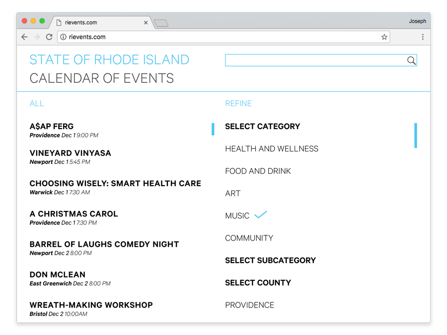

The aptly titled "State of Rhode Island Calendar of Events" is a resourceful app and website featuring goings-on in Rhode Island.
Upon opening the app, one is confronted with a chronological list of all events. They have the option to either explore all events by scrolling, or refine the list.
If they press the REFINE button, they are directed to a set of options where they may refine their search to an array of degrees, choosing to submit refinements at any time.
Upon selection of a category, several subcategory options are presented. Scrolling even further, the selections of county and date can be made.
Tapping an event redirects to that event’s web page!
The browser version is similar, but one can actually see their search being refined in real time.
